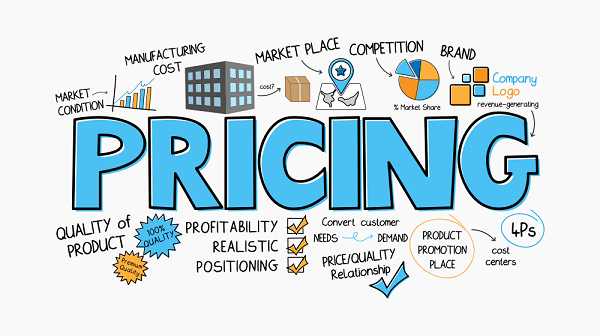
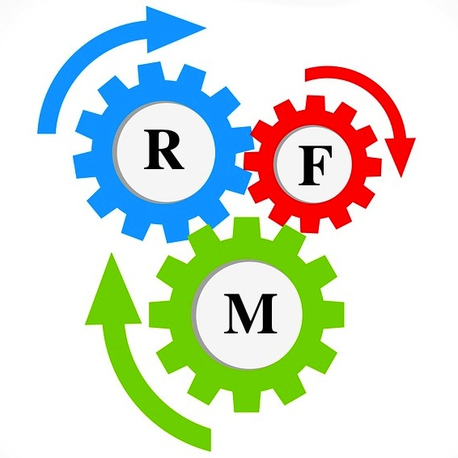

In this dynamic pricing strategy, I aimed to maximize revenue and profitability at the right level that balances supply and demand dynamics.
Using the dataset I obtained from Kaggle, I loaded it and performed data cleaning and several ETL processess. I was keen in observing features that would affect pricing and
created a correlation matrix to observe the strength of different features. Features that had strong
correlation inclueded ride duration, historical cost of ride, and also the number of riders and drivers.
I later implemented the dynamic pricing, to adjust ride cost dynamically based on demand and supply levels.This would capture high demand periods and
low supply scenarios to increase prices, while low demand periods and high supply situations will lead to price reductions.I calculated the adjusted ride cost for dynamic pricing
where I multiplied the historical cost of the ride by the maximum of the demand multiplier and a lower threshold,and also by the maximum of the supply multiplier and an upper threshold.This multiplication ensured that the adjusted ride cost captures the combined effect of demand and supply multipliers,
with the thresholds serving as caps or floors to control the price adjustments.

I installed yfinance to access the yahoo finance API to access real time stock prices of Apple.
I used the datetime and timedelta to specify the start date and end date of the stock prices. From this i downloaded the data which had no null values and all the data types were of the right data types. I utilized plotly to plot the time series by using the candlesticks for data visualization,and also see the patterns of the closing trend which showed that the stock value gained over time. I created a streamlit app to see the same and created a date filter to enable a user filter the dates to their need.
The time series was further analyzed into 1 month, 6 months and the year to date. I created a streamlit web app to monitor stock performance using the date filter to observe stock performance.

Insurance policies have been common nowadays with different companies offering different policies against different risks. In this project I focused on creating a machine model that
would aim to predict the amount of premium to be paid by individuals for a health policy. I utilized a kaggle data set which was relatively clean and performed different ETL processes and encoding of categorical variables. I later created a correlation matrix to measure the strength of the input features. I used the decision tree algorithm and also the random forest regression model to evaluate performance. I later performed the grid search to obtain appropriate parameters that would work relatively well with unseen data.
I retrained the model with the new parameters and gave me an accuracy of about 87% showing that the model worked well.

In this project, I utilized a Kaggle dataset to analyze the performance of Airbnb listings in the USA. The primary goal was to gain insights into areas with
high income by assessing various factors such as geographical regions, house sizes, and types of units. By categorizing units based on size and evaluating their
performance, the project aimed to provide valuable guidance for individuals interested in joining Airbnb, helping them align their venture with specific regions
and budget considerations. The findings serve as a comprehensive guide for potential hosts,
offering strategic insights into maximizing performance and making informed decisions in the Airbnb market.

In this RFM model I used a simple dataset to conduct RFM analysis using SQL. I created a database for the data and created tables with different constraints to ensure data integrity.
I calculated the most recent purchase by using the DATEDIFF but set my date to 2023-07-25 as the dataset was quite old.For the frequency I
used the COUNT function to establish the number of times the unique customer ids made purchases. I calculated the SUM of transactions made by the unique customer ids to establish the total spending. I created a SQL view where I joined the three queries using a subquery and named my view as combinedrfmtable. I utilized the CASE statement (if,else) statements to do customer segmentation where customers with a recency score <=50
classified as High, between 51 and 80 to be medium and higher than that as low. I did this for frequency and monetary value.

In this project, I leveraged a dataset sourced from Yahoo Finance to analyze the performance of Uber stock prices.
Given that it posed a regression challenge, I employed decision tree regression to formulate the model. The data was appropriately partitioned into training and testing sets. Subsequently, I assessed the model's performance, and the results indicated its efficiency as a reliable model.

In this project, my primary objective was to examine the distribution of various genders within the technology sector. Using Pandas, I created a data frame by employing Python to selectively extract the pertinent columns essential for the analysis. Python played a pivotal role in the data cleaning process, ensuring the dataset was refined and ready for analysis. To enhance the interpretability of the findings, I utilized the capabilities of both Plotly and Seaborn to generate compelling visualizations. This approach not only facilitated a comprehensive exploration
of the gender distribution but also enabled effective communication of insights through interactive pleasing charts.